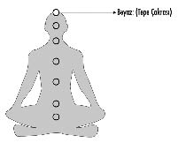

7- BEYAZ – TEPE ÇAKRASI (AYDINLANMA):
Tepe çakrası, kafatasının bıngıldak da denen bölgesinde yer alan ve varoluşla bağlantının sağlandığı enerji merkezdir.
Bazı öğretilerde renginin mor olduğu söylense de varoluşla bağlantının sağlandığı bu noktanın rengi, renk tayfının sadece yüzde 10’u olan mor değil, bütün renklerin birliği olan beyaz renktir.
Beyaz renk, bütün renklerin birleşimi olduğu gibi aynı zamanda var olan bütün enerjilerin de karışımıdır.
Eski çağlara ait resim tablolarında azizlerin başlarının üzerine çizilen parlak beyaz renkli hareler, ressamların din adamlarına yakıştırdıkları aksesuvarlar değildir. Azizlerin ve yüksek ustaların tepe çakraları iyi titreştiği ve enerji kanalları temiz olduğundan, tepe çakralarındaki beyaz ışık zaman zaman gözle görülebilecek seviyede parlaklaşabiliyordu. Dönemin ressamları hayal güçlerinin yarattığı şekilleri değil, kendi gözleriyle gördükleri hareleri tablolarına yansıtmışlardır.
Günümüzde de pek çok din adamı, ibadet ritüelleri sırasında beyaz takke takmayı tercih ederler. Tarihler boyu kullanılan bu beyaz takkeler, ışığı tepe çakrasına, yani varoluşla bir olma kanalına davet eder.
Cenaze törenlerinde siyah takke ya da başörtüsü kullanmakla hedeflenen şeyse; siyahla bütün parlak-beyaz ışığı emip tepe çakrayı matemin derin kederine karşılık koruma altına almaktır.
Bu bilgilerden habersiz pek çok din adamı; siyah ve beyaz renkli takkelerin, yaratana duyulan saygıdan kaynaklandığını öne sürer. Varoluşun kıyafetle ilgili yargıları olmadığı gibi, insanların günlük kıyafet tercihlerinin de birbirlerine duydukları sevgiyle ilişkisi yoktur. Bazı yakınlarım bugün bile ayakkabının saygı göstergesi olduğunu iddia etse de, ben yırtık spor ayakkabılarıma rağmen ona her zaman, her yerde ve her koşulda sonsuz saygı ve sevgi duymaya devam edebilirim. Bu yüzden şık ve pahalı ayakkabılar giyemeyen insanları, kimse saygısızlıkla suçlamaya kalkmasın. Etrafındaki insanların, senin onlardan beklediğin detaycılıkta giyinmiyor olmaları, seni sevmedikleri, önemsemedikleri ya da saygı duymadıkları sonucunu doğurmaz.
Şekilcilik, sevginin hayli uzağına düşen bir alandır.
Giydiğin kıyafetlerle ya da taktığın aksesuvarlarla varoluşa karşı saygını ifade etmiş olmazsın. Varoluşun, senin üzerinde taşıdığın çulun şekli ve markasıyla saygı ilişkisi kurmasını bekleme. Emin ol, “O” senin gibi düşünmüyor. Kızılderililerin çok sevdiğim bir sözü vardır: “Atların da tanrısı olsa dört ayaklı olurdu”
Bize bütün din kitaplarında varoluşun suretinde yaratıldığımız söylendiği halde bizler daha sonra kendi suretimizde; hınçlı, şekilci, her verdiğimiz kararı yargılayan, kıskanç ve tapınılmayı bekleyen bir varoluş yarattık.
Üzgünüm,
Uyansan iyi edersin, çünkü böyle bir varoluş yok!
Alis, çok uzun zamandır yanılsamalar diyarında yaşıyor...
Ben bile öğrettiğim egzersizlerde sana karşı esnek davranıp toleranslı olabilirken, sonsuz sevginin kaynağı olan varoluşun benim gösterdiğim kadar bile hoşgörü göstermeyeceğini düşünmek ve sadece ibadet ritüellerini yerine getirmediğin için seni cehennemde etlerin eriyene dek yakıp kavuracak zalimlikte olduğu fikrine katılmak seni “AŞK”tan giderek uzaklaştırmakta ve aranıza korkuyla örülmüş duvarlar örmektedir.
Varoluşla bir olma yolculuğunda ilerlerken, onu farkındalıkla sevmeyi de öğrenmelisin.
Farkındalığın yükselmesindeki önemli parametrelerden biri de öfkeden, kıskançlıktan, yargıdan, yokluktan ve kurban bilincinden çıkarak yaratan bilincine doğru ilerlemektir.
Altıncı enerji merkezi olan alın çakrasında farkındalık kanalını açtıktan sonra aralanacak olan yedinci çakrada aydınlanma deneyimelenecektir.
PEMBE “Kİ” TOPU: FARKINDALIKLI SEVGİ
“Pembe” renk tayfının yedi ana renginden biri değildir. Gökkuşağında “pembe” renge rastlamazsın. Dolayısıyla bedendeki enerji merkezlerinden birinin de rengi sayılmaz. Ancak pembe “Ki” topları ilişkileri şifalandırmakta ve dengelemekte çok işe yaradığından kalple ilişkilendirilmesi yanlış değildir.
Yeşil kalp çakrasının yanına yerleştirilerek enerji çalışmalarında kullanılabilen pembe “Ki” topları, meditasyonlarda da sık tercih edilen bir renktir.
Kalp bölgesine hâkim ve bu çakranın ikinci rengi olarak kabul edebileceğin pembeden fayda sağlayarak koşulsuz sevgide ve aşk ilişkilerinde iyileşme yaratabilirsin.
Pembe “Ki” toplarının iki ana konu üzerinde güçlü işlevleri vardır:
1- Koşulsuz sevgi
2- İlişkiler
3- Çekicilik
4- Korkular
1- KOŞULSUZ SEVGİ:
Koşulsuz sevgi konusunda insanların hissettikleri duygularla ilgili kafaları ve gönülleri oldukça karışıktır. Korkularının adını sevgi koyan insanlar, yazık ki bu noktada benim sevgi dediğim şeye “sevgi” demekte hayli zorlanıyorlar ya da benim sevgi olduğunu söylediğim şeye, mantıklarında uygun bir alan açıp oturtamıyorlar.
Sevgi’nin nasıl bir gönül terbiyesi ve farkındalıkla yaşanması gerektiği konusunda kimse hem fikir olamazken, koşulsuz sevginin ne olduğu sorusu yaşanan duygusal karmaşayı daha da artırıyor.
Senin de eminim kendine göre bir sevme şeklin ya da sevmek sandığın korkuların vardır muhakkak... Koşulsuz sevgide kalbine ne kadar güvendiğini sorsam, gayet cesaretli davranacağından da kuşkum yok.
Mesela annen için ya da çocuğun için böbrek nakli yaptırman söz konusu olsa ne düşünürdün?
İnanıyorum ki hiç düşünmeden, gözünü bile kırpmadan o böbreğin derhal sevdiğin insana nakledilmesini isterdin...
O halde koşulsuz sevginden bu denli eminsen, şu sıralar Çapa Tıp Fakültesi’nde diyalize bağlı yaşayan ve acil böbrek bekleyen küçük yaştaki bir hasta için de hemen ameliyat masasına yatabilir misin?
Bunun için biraz daha düşünmeye ihtiyacın var değil mi?
Haklısın...
Bizler kendi evlatlarımıza böbreğimizi vermeye her an hazır ama başkaların evlatları için kolumuzu kımıldatmamaya alışkın, aslında koşulsuz sevgiden oldukça uzak sevme şekilleri içinde kendimizi iyi hissetmeye çalışıyoruz.
Çocuğun için böbreğini hemen vermekteki kararlığında koşula bağlı bir sevgi söz konusudur. Sana ait bir evlat olması koşulundan dolayı onun uğruna neredeyse bütün organlarını bağışlamaya hazırken, evladın olmayan başka çocuklar için aynı şeyi, aynı kararlılık ve heyecanla yapamayabilirsin...
Bu sevgi şeklinin adı koşulsuz sevgi değil, koşula bağlı sevgidir!
Merak etme bu açıdan da yalnız değilsin... 12 yıldır verdiğim eğitimlerin her birinde çocuğuna organ bağışlamak isteyenler anında ellerini havaya kaldırıp koşulsuz sevgilerini kanıtlamak isterlerken, başka annelerin evlatları söz konusu olduğunda biraz önceki heveslerini hep kaybettiler. Hatta içlerinden bazıları “Metin Bey, o koşuldan sonra koşulsuz seviyoruz” bile dediler.
Bu cümlenin ne anlama geldiğini ben de çok düşündüm sonra ama işin içinden çıkamadım. Sevgin ya koşulludur ya da değildir. Ona koşullu, buna koşulsuz bir sevgi şekli yoktur. Bu sanırım yemek yedikten sonra diyet yapmak gibi bir şey!
Koşulsuz sevgi hesap sormaz, ayrım yapmaz, karşılık beklemez...
Lütfen bu konuda beni yanlış anlama; amacım kesinlikle sana kendini kötü ya da suçlu hissettirmek değil fakat artık şunu kabul etme noktasındayız ki; insanoğlu genel olarak koşulsuz sevgiden uzak!
Oysa insanın tekâmül yolculuğundaki asıl büyük ve temel hedefi koşulsuz sevgiye doğru ilerlemektir... Her ne kadar koşulsuz sevgide tam olarak var olmak ciddi bir gönül terbiyesi ve aydınlanma işiyse de bu hedefe doğru yürümek insanın varoluş gayesidir.
Sevgiyle atan her kalp, bir sabah cennete uyanacaktır
Bazı ilişkiler vardır mesela, tarafların ne konuştukları birdir, ne yedikleri, ne yaşadıkları, ne de anladıkları şeyler aynıdır. Aralarında şekilsel hiçbir ortak payda bulmak mümkün değilken bile güçlü kalp ilişkileri kurmayı başarmışlardır.
Benim yakın arkadaşım, büyük bir şirketin CEO’su olarak çalışıyordu ve yakın zamanda Sultanahmet’te dilencilik yapan bir adamla çıkmaya başladı. Yaşadığı kırgınlıklardan ve büyük mutsuzluklardan sonra işini gücünü bırakıp meczup bir hayat yaşamaya başlayan işadamı, sokaklarda yatıp kalkar olmuştu ve Sultanahmet civarında dilencilik yapıyordu. Arkadaşım son model arabalara binip en iyi semtlerde otururken âşık olduğu adam kaldırım taşının üzerinde uyuyordu. İkisi arasındaki tek ortak paylaşım içsel yolculuklarıydı ve bu paylaşımdan dolayı da gayet mutluydular... Bu ilişkiye baktığında koşulsuza yakın bir sevgi bağı görebilirsin.
– Ben gerçek bir aşk ilişkisi için çok çaba gösteriyorum ama yine de olmuyor...
– Dingin ve farkındalıklı çaba, suda rahatça yüzmeni sağlarken; rastgele farkındalıksız bir çaba suda boğulmana neden olur. Ne gariptir ki AŞK içine doğup yaşayan ve ölen insanlar; aşkta kalmayı başaramayıp burada kendilerini boğarlar. Suya doğup, suda boğulan balık olur mu hiç? İnsanlar aşka doğar ama öfke içinde boğulurlar... Çok garip bir tezat.
Modern çağın, modern insanları günümüzde artık kendisi için araba seçer gibi şekilsel ve işlevsel parametreler belirleyip hayatına dahil edebileceği insan arayışı içindeler.
Bir defasında “Metin Bey, ben yılda bir milyon dolar kazanan, beni seven, benimle alışverişe çıkan, birlikte dedikodu yapıp saatlerce konuşabileceğim bir insan istiyorum. Çok şey mi bekliyorum?” demişti. Kadının gözlerinin içine bakıp onu gerçekten anlamaya çalışarak “Hanımefendi siz erkek istediğinizden emin misiniz?” dedim. Aradığı şartlarda bir erkek yüksek olasılıkla ya erkek değildir ya da günlerce alışveriş ve dedikoduyla yaşayarak bir milyon dolar kazanabilecek kadar zeki bir adamdır.
İnsanların, gerçeklikten, gönülden, sevgiden ve koşulsuzluktan bu kadar uzak ve saçma kurguları olan ilişki modelleri seçip sonra da aşk hayatlarındaki mutsuzluğun sebebini anlayamamaktan yakınmaları sence de tuhaf değil mi?
– Metin ben ruh eşimi ne zaman bulurum?
– Dilersen ben sana birkaç adımda nasıl ruh eşi bulunabileceğini anlatayım: Şimdi o koltuktan kalk, banyoya git, lavabonun önüne geç, kafanı indir, gözlerini kapat, kalbini aç, şimdi kafanı kaldır, gözlerini arala, karşındaki aynaya bak. Ruh eşi diye bir şey olmadığını anladığında, ruh eşini bulursun.
Benim sevmek konusunda çok beğendiğim ve sıkça örnek gösterdiğim bir söz vardır:
“Pencerendeki güvercinleri nasıl seviyorsan insanları da öyle sev...”
Cam önüne yerleşen güvercinler gördüğünde onları izler, sevinir ve seversin... Onlara gülümser ve varlıklarından hoşnutluk duyarsın. Ertesi gün aynı güvercinler aynı saatte ve yerinde pencerenin önünde buluşmazlarsa; öfke, korku ya da endişe duymazsın. Kendini terk edilmiş, yalnız ve yarım kalmış hissetmezsin. Güvercinler beş gün sonra pencerene doluşmaya başladıklarında onlara aradaki dört günün hesabını sorup her birini tek tek salona çekerek kafese koymaya da kalkmazsın. Onları sadece seversin. Güvercinlere görev ya da sorumluluklar yüklemez, onlarla ilgili beklentiye girmez ve korkular yaratmazsın... İşte bu gerçekten sevmektir.
İçinde korkunun, öfkenin, beklentinin ve kontrolün olduğu ilişki şekillerinin hiçbirinde sevgiden bahsetmek mümkün değildir.
Bir defasında özel bir hastanede tedavi gören bir hasta için yoğun bakıma gitmiştim. Üç kardeşten biri hasta, diğeri içeride hastanın başucundaydı. Dışarıda bekleyen kardeşle mücadelesini verdikleri bu kanser hastalığının nasıl oluştuğundan bahsediyorduk. Kız kardeşe, bu hastalığın sevginin olmadığı yerde ortaya çıktığını, eğer deneyimlenen bir kanser vakası varsa yüksek ihtimalle orada sevginin gerçekleşmemiş olduğunu anlattım. Hatta bu yüzden dünyada kanseri en az görülen organın kalp olduğunu söyledim. Kalp bölgesini sevgisiz bırakırsan, orası kanser veya kronik bir hastalık yaratacak kadar uzun zamanlar beklemez. Beklenmedik bir kriz ya da başka bir sebeple şalteri kapatıp devre dışı kalır. Gözün bile kanseri varken kalbin kanser olduğu vakalara dünyada sadece birkaç kez rastlanmış. Kız kardeş “sevgi” ve “kanser” arasında kurduğum ilişkiyi tamamen reddederek “Ne alakası var Metin Bey. Ben de kanserim ama kardeşimi her şeyden çok severim” dedi. Kendisine kardeşini ne kadar sevdiğini sorduğumdaysa sesinin tonu ve heyecanı yükselmeye başladı. “Bakın aşağıda kardeşim için gelen en az 100 kişi var. İşte onlar ne kadar üzülüyorsa, ben her birinin bin katı kadar üzüntü duyuyorum” diyerek bağırmaya başladı. Aslında verdiği cevap tam da anlattığım şeyin ne olduğunu açıklıyordu. Onun sevmek sandığı şey başkası için korkmak ve endişe duymaktı.
Bu konuda sana bir sır vermemi ister misin?
Sevgi ışığın, korkuysa karanlığın kendisidir. Işık varsa karanlık olmaz... Eğer karanlık varsa, o halde ışık yok demektir... İkinsin aynı ortamda aynı anda birlikte var olması mümkün değildir.
Bu konu tartışmaya tamamen kapalıdır. Karanlığın içine ışık girerse orası artık aydınlıktır. Sevgi ve korku birbiriyle iç içe olamazlar... İçlerinden biri söz konusuysa diğeri ihtimal dahi değildir.
– Peki ya karanlıktan korkuyorsak ne yapacağız?
– O zaman karanlığın kalbine doğru yürürsün ve ışığı yakarsın.
Çocuk sevgisinde bile hissedilen korku ve endişeler, hep sevmekle karıştırılmıştır.
Bir defasında eğitimime yorgun ve uykusuz halde gelen öğrencime gece ne yaşadığını sorduğumda “Oğlum gece dışarı çıktığı için sabaha kadar uyumayıp onu camlarda bekledim” dedi. Neden böyle davrandığını anlamak istediğimdeyse “Çocuğumun başına bir şey gelir, bıçaklanır ya da kavgaya karışır diye endişelendim çünkü onu çok seviyorum” dedi. Oysa yaptığı şeyin sevmekle ilgisi yoktu. Çocuğuyla ilgili hissettiği en güçlü duygu korkuydu.
Sevgi, özgür bırakmaktır.
Bırak(a)madığın şey zaten seni terk etmiştir.
Sevginin korkuyla kol kola yürüyemeyeceğini artık anlaman gerekiyor...
Anne ve babalar genel olarak çocuklarıyla ilgili korku temelli bağlantılar kurarak daha sonra yaşadıkları ilk hayal kırıklığında “Canım dediğim canımı yaktı” diyerek yakınır. Onların canını yakan şey çocukları değildir aslında. Karşılıklı ilişkilerini yapılandırırlarken, aile bağlarının üzerine sevgi tohumu ektiklerini sanarak, yazık ki korkuyla acı tohumları ekmişlerdir ve bu romantizme de fazlaca kandıklarından bugün ortaya çıkan acılardan dolayı sıkıntı yaşıyorlardır.
Bir başka öğrencim de mutsuzluğu yüzünün her halinde belli, çözemediği sorunlarıyla karşıma gelmişti. Neler olup bittiğini sorduğumdaysa bana “Hiç sormayın Metin Bey; depresyona girdim. Üstelik kocam da depresyonda çünkü oğlum depresyona girdi” dedi. Çocukları zaten depresyondaydı ve kendisinden daha zor durumda gibi gözüken anne ve babasını evin içinde gördükçe bu çocuğun iyiye gitmesi imkânsızdı. Hastama “Önce siz iyi olun, sonrasında da çocuğunuza destek olun” dediğimde “Yok hayır ben iyi olmasam da olur yeter ki oğlum iyileşsin” dedi. Kendisi iyileşmedikçe oğluna yardımcı olması mümkün değildi. Oğlunu sevdiği ve ona destek olması gerektiği için herkesten önce kendisinin sağlıklı ve güçlü olması gerektiğinin farkına varmak yerine, kendi durumunu da zora sokarak çocuğuna zarar verdiğini göremiyordu. Sevdiklerimizden birinin iyileşmesi, diğerinin kötü olması koşuluna bağlı değildir. Böylesi saçma çıkmazlara sokulmuş ilişkilerde kimse kalkıp da bana büyük sevgilerden bahsetmesin lütfen...
“İlişki” vermek değil, paylaşmaktır.
“Sevmek” karşılıklı oturup ağlamak değildir! Biri üzülürken diğerinin de bundan dolayı üzüntü duymasının aptallıktan başka bir izahı yoktur. Aile olmak, destek olmaktır. Biri düştüğünde diğerinin ayağa kalkarak düşene el uzatıp ona yardımcı olabilmesidir.
Babam geçirdiği trafik kazasından dolayı bir yıl boyunca yatalakken annem dimdik ayaktaydı. Ben düştüğüm zamanlarda, babam her defasında kolumdan tutup yakalıyor beni. Onlar ekonomik olarak battığı zamanlarda ben yanlarındaydım ve güçlüydüm. Ben duygusal desteğe ihtiyaç duyduğumda ablam her zaman yanımda durmuştur. Aile olmak bir üzüntüyle aynı anda hep birlikte yıkılmak değil, iyileşmeye başlamanın bir yolunu bulmaktır. Sevgiler karşılıklı ağlayarak tecrübe edilmez.
Empati kurmak, karşındakini anlamaktır. Onunla beraber üzüntüye boğulmak demek değildir. Karşındakine üzülmek onun içindeki âcizlik duygusunu besler. Düşünsene bana gelip derdini anlattığında ben de üzgün bir ifadeyle sana üzülsem kendini nasıl hissederdin. Ben kalpsiz bir insan değilim. Ama egonu beslemek uğruna seni mutsuzluğa itemem. Ben durum ne olursa olsun karşındaki insanın içindeki ustaya seslenmeye çalışırım. Bu nedenle felsefemizin ismi “İnsanagüven”dir. Başkalarının çaresizlik gördüğü yerde ben çare görmeye çalışırım.
Çırağın tırtıl dediğine, usta kelebek derler...
Biz İnsanagüven’de ustalık yolundaki çıraklarız. Bizim yaşam amacımız “Kendin için ne istiyorsan, onu karşındakine ver”dir... Böylece senin içindeki usta, benim içimdeki ustayı uyandırır!
“Sevmek” ilişkileri beslemek ve desteklemektir de aynı zamanda. Şunu da hiç unutma ki; sevdiklerine destek olabilmek, onların ellerinden tutup iyileştirebilmek için kendin düzgün bir alanda iyi olmak zorundasın. Karşılıklı ağlayıp yakınarak, hayatının orta yerinde koca bir kara delik yaratmış olursun. Üstelik yarattığın bu kara delik hiçbir zaman sevgiden sayılmayacaktır...
Farkındalıklı sevgi; doğru ve gerçek bir sevgi şeklidir.
Çocuğu yere düşen annelerin koşarak yerdeki çocuğu kaldırmaları aslında çocuklarının sağlıklı gelişimlerine engel olan iyi niyetli ancak farkındalığı olmayan bir hamledir. Yere düşen çocuklar kendi çabalarıyla ayağa kakmayı denerken tam 17 tane kas grubunu kullanarak yürümeyi, ayakta durmayı ve güç kazanmayı öğrenirler.
Yavru kuşların yumurtadan çıktıklarında kanat çırpmalarındaki amaçları uçmak değil, uçacak kanatları yaratmaktır...
Sürekli ateşi çıkan ve hiç iyileşmeyen küçük bir hastamı, babaannesi yanıma getirmişti. Çocuğun bağışıklık sistemi o kadar zayıftı ki ateşi sürekli yükseliyordu. Babaannesinin anlattığına göre torun çok terlediği için gecede en az on kez çamaşırları değişiyormuş. Kendisi hava sıcak olduğu için askılı bluz giyen babaanne, torununa hasta olduğu gerekçesiyle kalın kıyafetler giydirmişti.
İnsan, terlediği vakit, vücudun dışına çıkan sıvı, bedenindeki enerjiyi çekerek buharlaşır. Bir şey yüzeyden buharlaştığındaysa doğal olarak o yüzeyi de soğutur.
Çocuğun bedeni hararetle soğumaya çalışırken onu üşümesin diye kat kat giydirdiklerinde bedenin soğumak için verdiği çaba da artıyordu. Çocuğun üstü sürekli silinince ve çamaşırları değiştirildikçe beden henüz soğumadığına kanaat getirerek dışarıya biraz daha sıvı vermeye başlıyor ancak ter yine silindiğinden bu kez beden sistematik bir rahatsızlığı olduğunu düşünerek vücudun ateşini yükseltiyordu.
Babaanne torununun sıcak havada kalın giysiler içinde terlemeye devam edeceği ve çocuğun bedeni soğuyamadıkça ateşinin yükseleceği algısına sahip değildi. Şimdi hemen anneler bana “Ama Metin o daha çocuk. Çok üşür” demesin. Anneler kertenkele doğurmadılarsa çocukları da kendileri gibi sıcakkanlı varlıklar olarak dünyaya geleceklerdir. Çocukların da sıcakkanlı memeliler olduğunu ve kendi vücut sıcaklıklarını ayabileceklerini hatırlatmak isterim.
Bu vakada babaannenin kötü niyetli olduğunu kuşkusuz ki kimse söyleyemez. Yaşlı kadın aslında torunuyla ilgili gayet iyi niyetli bir çaba içindeydi fakat farkındalığı olmadığından çocuğa zarar veriyordu.
Farkındalıksız sevgi; aslında korkudur. Korku ancak mutsuzluk ve yıkım getirir.
2- İLİŞKİLER:
Pembe “Ki” topları, ilişkiler üzerinde oldukça etkilidirler. Pembe bir “Ki” topunun içine alıp sarmaladığın her ilişki şifalanır. Burada ilişkilerin toparlanmasından bahsetmediğimi, bunun yerine özellikle şifalanmak kelimesini kullandığımı fark etmişsindir.
Şifa’da “iyileşmek” ve “ölüm” ihtimallerinin aynı anda var olduğunu hatırla lütfen!
Pembe “Ki” toplarıyla şifalandırdığın ilişkiler için her durumda iki senaryo söz konusu olacaktır. Üzerine sevgi yolladığın ilişki bir sevgi ilişkisiyse daha yüksek bir sevgi eşiğine çıkarak iyileşme gösterecektir. Korku ilişkileri ve bağımlı beraberlikler “sevgi”yle var olmadıkları için sonlanması gerektiğinden kopacaktır.
Sevgini yolladığın bir ilişki bitiyorsa, bu orada sevgi var olmadığı içindir. Pembe “Ki” toplarıyla iyileşmesi gereken ilişkilerin güç kazanırken, bitmesi gerekenler de hayatından çıkarak şifalanacaktır.
Kopan ilişkilerin, düşmanlıkla, kinle, kavgayla ya da küslükle bitmesi hiçbir zaman sevginin doğal tecrübelerinden biri sayılmaz. Severek uğurlamak, ilişkiyi sağlıkla noktalarken, kırgınlıkla ayrılmaksa yaşam boyu o ilişkinin sonlanmasına izin vermeyerek seni hiçbir zaman özgür bırakmayacaktır.
İçinde kavga ve öfke olan ilişkilerde yaşanan ayrılıklar, taraflar için bitmek nedir bilmeyeceğinden, sert bir blokaj olarak bedenin bir köşesinde kendine yer edinecektir. Yazık ki bu blokaj, her yeni ilişkide korku, endişe ve güvensizlik yaratarak, bireyin gerçek sevgi ilişkileri deneyimlemesine izin vermeyecektir.
Yakın zamanda arkadaşlarımla birlikte dışarıda vakit geçirdiğimiz sırada tesadüfen eski kız arkadaşımla karşılaştım ve birbirimize sarılarak sohbet etmeye başladık. Uzun süredir görüşmediğimiz için ayaküstü birbirimize sorabileceğimiz her şeyi sorduk. Vedalaşırken de yine sarılarak ve ilişkimiz boyunca birbirimizin hayatına kattığımız her şey için karşılıklı teşekkür ederek ayrıldık. Olan biteni izleyen arkadaşlarım şaşkınlıkla yüzüme bakıp “Metin siz ayrılmamış mıydınız?” dediler. Arkadaşlarım kendi ilişkilerinde ve etraflarında yaşanan beraberliklerde; eski sevgililerin birbirlerini görmezlikten gelmelerine, karşılıklı nefretle hatırlanmalarına ve öfkeli tepkiler göstermelerine o kadar alışmışlar ki, bunun aksinin mümkün olabileceği ihtimalini dahi hiç düşünmemişler. Bu yüzden de eski kız arkadaşımla olan samimi diyalogumu hayretle ve kuşkuyla izleyip durdular. Oysa kız arkadaşımla ilişkimiz sevgiyle bittiği ve biz karşılıklı özgür kalabildiğimiz için, birlikte yaşanmış her şeye saygıyla ve minnetle bakabiliyorduk. Aramızda öfke yaratan en ufak bir kıvılcım kalmış olsaydı, yaşayacağımız tepkili ve öfkeli karşılaşmalarımız aslında bizim ilişkimizin bir türlü bitemediği, kalplerimizde olumsuz hisler yaratarak yaşanmaya ve sürünmeye devam ettiği anlamına gelecekti.
Ayrılıkları büyük tepkilerle yaşamak ne bir gelenektir, ne de gerçek bir “ayrılık”tır. Onun öfkesini kalbinde tutarken sen gerçekten ondan ayrılmış olur musun?
İnsan ancak sevgiyle uğurladığında özgür kalabilir... Bu noktada da farkındalıklı vedalaşmalar yaşaman gerektiğini anlaman gerekiyor. İçinde kırgınlık ve kavga olan vedalaşmaların hiçbiri “ayrılık” değildir...
İnsanı özgür bırakan gerçek bir ayrılık sadece “sevgi”yle gerçekleştirilen bir uğurlamayla mümkündür.
Başkası seni terk ettiğinde yalnızlaşırsın.
Ama ancak sen kendini terk edersen yalnız kalırsın...
İhanetle, kavgayla, hakaretle ya da bunlar gibi herhangi bir travmayla biten, hatırlandığında kırgınlık ve olumsuz duygular hissedilen ilişkiler aslında bitmemiştir. Bu yüzden taraflar sevgiyle özgürleşemediklerinden yeni ilişkilerinde eksiklik, mutsuzluk ve bağımlılık hissederek gerçek sevgi ilişkileri de yaşayamazlar.
Farkındalıklı ayrılıklar için sakin ve dingin zihin yapısıyla kararlar alıp uygulamak çok önemlidir.
Bana “Boşanmayı düşünüyorum” diyerek gelen öfkeli ve kırgın insanlara “Lütfen biraz daha bekle. Sakinleş ve farkındalıklı bir karar ver” derim!
Mutsuz ilişkilerde kişiye boşanmasını önerecek ilk insan ben olduğum halde, bu kararların dingin zihinle verilmesi gerektiğini bildiğimden tarafların sakinleşmeden, kızgınlıkla bir işe kalkışmalarını önermem.
Şunu her zaman ve hemen her konuda hatırlamanı isterim;
Dinginlikle ve farkındalıkla verdiğin kararlar sana mutluluk getirir.
Öfkeyle ve kırgınlıkla verdiğin kararlarsa, sana her zaman yıkım getirmeye devam edecektir.
Dikkat et:
“Ayrılık” kurban bilinciyle yaşanırsa terk edilme,
evrensel bilinçle yaşanırsa özgür kalma olarak deneyimlenir...
Bu iki önemli nokta algıyı bütünüyle değiştireceğinden, hissettiklerin ve dolayısıyla gösterdiğin tepkilerin de farkındalıklı olacaktır. Ne demiştik; algın değişirse, hislerin değişir, hislerin değişirse tepkilerin değişir, tepkilerin değişire “deneyim” değişir. Bu nedenle farkındalıklı tepkiler vermeyi öğrenmen çok önemli.
İlişkilerdeki farkındalığı öğrenme sürecinde pembe “Ki” topları sana çok yardımcı olacaktır.
Pembe “Ki” topları “sevgi” dengesi sağladığından sadece sevgili ilişkileri için değil, ailenle, iş arkadaşlarınla, dostlarınla, komşularınla, akrabalarınla olan ilişkilerini de şifalandırmak için kullanılır.
Bu konuda kafası karışan bir öğrencim, site yöneticisi olan eşine ve toplantı sırasında eşine yumruk atan emekli albayın üzerine pembe bir “Ki” topu gönderdiğini anlattı. Site içine yaptırılan kaçak duvar yöneticiyle emekli albayın arasını açmış, hatta iş mahkemeye kadar varmıştı. O gün yeni bir toplantı yapılacağını, site yöneticisi eşiyle emekli albayın bir kez daha karşı karşıya gelmesinden korktuğu için bu iki adamın üzerine pembe “Ki” topu attığını anlatan öğrencim, iki saat boyunca eşinden ve albaydan haber alamayınca telaşlanmaya başlamıştı. Üç saatin sonunda endişeleri artarken artık dördüncü saatin sonunda beklemeye daha fazla dayanamamış ve “Sakın bu albay benim kocama âşık olmasın” diyerek evden fırlayıp çıkmış.
Senin de pembe “Ki” toplarıyla ilgili aynı karmaşayı yaşamanı istemediğim için bir kez daha altını çizerek belirtmek isterim ki; pembe “Ki” topları sadece cinsel arzuları ve sevgili ilişkilerini dengelemek için değil, bütün insan ilişkilerini şifalandırmak içindir. Mesela, çalıştığın işyerine pembe bir “Ki” topu atarak çalışanların birbirleriyle daha iyi anlaşmalarını sağlayabilirsin.
Renkli “Ki” toplarıyla yapman gereken egzersizleri merak ettiğin bütün ayrıntılarla konun sonunda anlattım.
“Metin Bey, ben pembe “Ki” topu yapıp ilişkimi sevgiyle sardım ama ayrıldık” yakınmasıyla kulaklarımı çınlatacak olursan, benim de sana şu cevabı verdiğimi işitirsin:
“Üzerine sevgi gönderdiğin bir ilişki kopuyorsa, bil ki o ilişki sevgi ilişkisi değildir ve nihayet şifalanmışsınızdır. Yok eğer bu ayrılıktan dolayı acı çekmeye başladıysan, üzülerek söylemek zorundayım ki:
Gerçek canını yakıyorsa, yanılsamada yaşıyorsundur.”
ELEK
Günün birinde bir usta, aşk acısı çeken ve bu yüzden hayata küsen öğrencisiyle karşı karşıya gelir. Öğrenci içindeki ayrılık acısının da şiddetiyle hocasına ağır sözlerle sitem eder; “Hep aşka hayatla ilgili dersler verip duruyorsunuz hocam, ama benim bugüne kadar sizden öğrendiklerim aşk acımı hafifletmiyor. Eğitimlerinizden aldığım hiçbir bilgi, benim hayatımda fark yaratmıyor” der.
Öğrencisine şefkatle gülümseyen hoca, onu yanına kattığı gibi bir gölün kenarına götürür. Dört saat boyunca hiç durup dinlenmeden göle varırlar. Öğrenci bu sıcakta saatlerce yürümekten bitkin düşmüştür ve gölden su içebilmek için hocasından izin ister. Hoca da buna izin verir ve çantasından çıkardığı eleği ona uzatarak “Al evladım. Eleğinin tutabildiği kadar suyu doyasıya iç” der.
Öğrencisi şaşkınlıkla eleği alır ve göle daldırmaya başlar. Eleğin içinde bir damla su tutmak bile mümkün değildir. Öğrenci artık susuzluktan baygınlık geçireceğini hisseder.
Sonunda hoca kendi eleğini alıp suya dalar. Hoca suyun içine doğru elinde elekle birlikte yürümeye başlar. Ağzı suya gömülene dek elinde elekle gölde yürür ve ağzı suya değdiği an kana kana suyunu içip geri döner. Öğrencisi hocanın ne yaptığını anlayamayıp “Bu neydi şimdi hocam?” diye sorar. Hoca, sitemkâr öğrencisine döner ve ona şöyle der:
“Evlat sen yaşamına aşkı eklemeye çalışıyorsun. Yaşam devam ederken aşkı da içine katayım diyorsun. Senin yaşamın aşktır. Bunun için zihnini yitirmen gerekir. Zihninin eleğiyle aşka ulaşamazsın. Hiçbir gölü eleğe hapsedemezsin. Aşkı bedenine hapsetmek yerine bırak ruhunu aşk istila etsin. Ben sana eleği bırakıp aşkın içinde boğulmayı öğretmeye çalışıyorum.”
3- ÇEKİCİLİK:
Bedenini pembe “Ki” topuyla sardığında, “sevgi”nin yüksek frekansıyla titreşmeye başlarsın ve bu parlaklık herkes tarafından kolayca görülüp fark edilir.
Sevgi titreşimlerinin yarattığı “çekicilik” sadece cinsel uyarıcılık değildir. “Sevgi” ışığa yakın bir frekans olduğundan başkaları tarafından hemen seçilir.
Sen de etrafında “sempatik”, “yıldızı yüksek”, “şeytan tüyü var” ya da “hayat enerjisi yüksek” olan insanlar görmüş, belki bunlarla tanışmışsındır da. Bazen yanındaki partneri fiziksel olarak daha göz alıcı ve dikkat çekici göründüğü halde diğer tarafın taşıdığı o sevgi dolu yüksek enerji, insanlara daha cazip gelir. Bu tür kişiler çok daha eğlencelidir ve gözlerinin parıltısı coşku vericidir. Kendileriyle barışıktırlar ve içleri dışları birdir.
Anlattığım bu insanlar aslında kimlerdir biliyor musun?
Kendilerini daha fazla sevenlerdir...
Fiziğiyle, yüzüyle, endamıyla dünyanın en güzel insanı gibi görünse de, kimse asık yüzlü, her an birilerini terslemeye hazır, sevimsiz, mesafeli ve soğuk insanlarla arkadaşlık kurmak istemeyeceği gibi onlarla aynı ortamda dahi bulunmaktan kaçınır.
Psikiyatrik rahatsızlığı olmayan her insan, bütün ilişkilerinde enerjisi yüksek kişilere yönelir. Sineklerin güneş çekildikten sonra lambalara yönelmeleri kadar net bir biçimde hepimiz, mutlu, keyifli ve yüksek enerjisi olan insanlar isteriz etrafımızda.
Aynı yumurta ikizlerinin bile biri hayata öyle bağlıdır ki gözlerinin ışıltısına karşı koyamazsın ve tıpkı ona benzeyen kardeşiyle değil de tınısı farklı olan bu kişinin yanında olmak istersin. Belki onun sevgilisi ya da arkadaşı olmayı arzularsın. Etrafında hep onun gibi enerjisi yüksek, gülümseyen, hayat dolu insanlar olmasını tercih edersin.
Mesela bebekler, çocuklar ya da hayvan yavruları sevgi dolu olmanın yarattığı cazibenin tam da zirvesindeki yaratıklardır.
Dünyanın en gaddar insanı dahi bir çocuk ya da sevimli bir hayvan yavrusu gördüğünde gülümseyerek yumuşamaya başlar. Çocukların enerjisinde evrenin kodu vardır. Kendinde unuttuğun varoluşu, çocukların sevgi dolu yüksek enerjilerinde hissedersin.
Altlarına da yapsalar, sümükleri de akıp dursa ve kulağını tırmalayarak bağırıp ağlasalar da onlara karşı tahammülün ve hoşgörün her zaman daha yüksektir.
Peki neden?
Bir canlının yavrusu henüz egosunu oluşturmadığından sen onu gördüğünde “yuva”yı hatırlarsın. Gerçekte kendin olduğun saf sevgiyi hatırlarsın. Onlar yeni kopup geldikleri cennetin tınısını, kokusunu taşırlar. Sana kendi gereğini, kimliğini hatırlatırlar.
Geçtiğimiz günlerde yavru bir sokak kedisi bulup, veteriner kontrollerini yaptırdıkta sonra sahiplendirmek üzere eve getirdim. “Toma” adını verdiğim minik kediye şırıngayla süt içiriyor, karnını okşayarak kucağımda sallıyor ve ona bildiğim bütün şarkıları söylüyor oluşum babamın bile dikkatini çekmiş “Metin galiba senin çocuk yapma vaktin geldi oğlum” diyerek espri yapmıştı. Toma’yla çocuklaştığımın farkında bile değildim ve onunla gerçekten kendimi iyi hissediyordum. Evinde hayvan olan insanların, enerjilerini yükseltmek için aslında çok değerli bir aracıya ve yardımcıya sahip olduklarını bilmeleri gerekir.
Babamı kızdırıp bundan kendimce eğlence çıkarmayı çocukluğumdan beri çok sevmişimdir ve bugün bile öyle haşarılıklar yaparım ki yaşlı adamı süngüleri çıkmış halde odadan odaya peşimden koştururum. Babamı durduramayacağımı anladığım vakit “Baba torunun nasıldı ama bugün, çok tatlı değil mi?” diyerek topu bir buçuk yaşındaki yeğenim Leo’nun üzerine atarım. Biricik torununun adını duyar duymaz süngüleri düşen babam; gülümsemeye, yumuşamaya ve oturup sakinleşmeye başlar.
Bir defasında yurtdışında yaşayan bir arkadaşım, Türkiye’ye dönerken yanında küçük bir kedi yavrusu da getirmişti. Daha önce intihar girişiminde de bulunan bu genç adamın uçaktan inerken kucağında yavru kedi taşıdığını gördüğümde, evde babasıyla büyük kriz yaşayacağını da tahmin etmiştim. Arkadaşımın babası kontrolcü ve sert bir adamdı. Kucağımızda yavru kediyle içeri girdiğimizde öfkeli baba, henüz oğlunu karşılayıp ona sarılmadan veryansın etmeye başlamıştı. Yavru kedinin bir an evvel evden gitmesini, aksi halde oğlunu da bu evde görmek istemediğini söyledi. Araya girip babayla oğul arasında barış sağlamaya çalıştıysam da, bu pek de mümkün görünmüyordu.
Aradan birkaç gün geçtikten sonra arkadaşımı evinde görmek isteyip ziyaretine gittim. Karşılaştığım manzara kafamı karıştırmıştı. Yavru kedi ara sıra öfkeli babanın bacaklarına sırnaşıyor, zılgıtı yiyince de geri dönüyordu. Arkadaşımı kenara çekip, babasını izlemesini çünkü yüksek ihtimalle yaşlı adamın bu küçük kediyi herkesten gizli sevmeye başlamış olabileceğini söyledim. Arkadaşım bu ihtimalin mümkün olmadığını iddia etse de, ısrarıma dayanamayıp o gece bilgisayarının kamerasını evin salonunda açık bırakıp uyudu. Ertesi sabah izlediğimiz görüntüler, haklı olduğumu kanıtlıyordu. Öfkeli baba, ev halkı uykuya çekildiği vakit, gece salonda uyuyan yavru kediyi ziyarete geliyor ve onunla çocuklar gibi oynayarak eğleniyordu. Sabah olduğunda zalimliğini kuşanan baba, bu ikili tavrıyla kediciğin kafasını karıştırıyordu. Zavallı kedi akşam barıştığını sandığı babayı doğal olarak sabahları sevinçle karşılamak ve bacaklarına sırnaşmak istiyor ancak bunu her yaptığında geri püskürtülüyordu.
Bu küçük sevimli kedi, gaddarlığıyla nam salmış yaşlı adamı bile yumuşatmış ve onu çocuklar gibi eğlendirip güldürmeyi başarmıştı. Öfkeli babanın örselenmiş çocukluğu ve hayatı boyunca göstermeyi başaramadığı sevgisi, bu küçük yavru hayvanda eşlik bulmuştu.
– Işığa en yakın varoluş parçacığı olan çocuklar, buna rağmen yavru hayvanlara zarar verip onları öldürebilecek kadar nasıl vahşileşebiliyorlar?
– Çocukların kendilerine ya da başka canlılara karşı sergiledikleri her tepkili hareket iki önemli konuya işaret eder. Ebeveynlerinden ihtiyaç duyduğu sevgiyi alamadığı gibi, derin bir ilgisizlik içinde bırakılan çocuklar, kendilerine ya da başkalarına zarar vererek “İmdat!” diye bağırırlar. Son yapılan psikiyatrik çalışmalar; çocukların bazı durumlarda vazoyu kırıp dayak yemek uğruna annesinden ilgi görmek için bazı hareketleri yaptığını gösteriyor.
Şunu her zaman hatırlamanı isterim:
İçindeki ustayı, içindeki hakikati sana aynalayacak olan varlıklar temiz varlıklardır.
Evet! Bizler de birbirimize karşı “ayna” sayılabiliriz belki... Fakat bu noktada sadece gerçek bir usta, temiz bir ayna görevi görebilir. Sen kendi içinde problemliyken, aslında kendi problemlerini de başkasında yansıtıyor olabilirsin. İyi bir usta sana gerçek ya da gerçeğe yakın görüntünü sunabilir... Bu nedenle temiz bir ayna olmaya çalış!
4- KORKULAR:
Korku, daha önce de söylediğim gibi kocaman bir karanlıktır. “Sevgi”yse bu karanlığı aydınlatabilecek tek ışık...
Korkularla ilgili çalışırken iki tane parametre söz konusudur:
Korkuları var eden şey, beta beyin dalgası olduğundan sufi nefesi egzersizlerine düzenli devam ederek, beyin dalgalarını düşürmelisin.
Pembe “Ki” topuyla korkularının üzerine sevgini koyarak, onları ışığın içinde boğulmaya terk edebilirsin.
Yükseklik korkusu, köpek korkusu, boğulma korkusu gibi; hayatındaki bir dolu korkunun üzerine pembe “Ki” topları atmaya devam edersen, bir müddet sonra bu korkularının azalmaya başladığını görürsün. Ancak hayatında güçlü travmalara ve sert blokajlara dönüşmüş korkularını, bir tane pembe “Ki” topuyla çözmen mümkün olmayabilir.
Sana bu konuda istikrarlı olman gerektiğini hatırlatır ve her gün bu travmatik korkularının üzerine pembe “Ki” topuyla sevgi yollamaya devam etmeni isterim. Sert blokajların belki başlangıçta, yolladığın sevgiyi yutacaktır ancak emin ol her karanlık ışığa boyun eğmek zorunda olduğundan, blokajların da yolladığın sevginin içinde erimeye başlayacaktır.
– Çocuğumu farkındalıklı sevmeye çalışıyorum ama onun için endişelenmekten ve başına gelebilecek kötü olasılıkları görmezlikten gelemiyorum. Bu haklı bir korku değil midir?
– Ebeveynlerin çocuklarıyla ilgili sürekli felaket senaryoları üretmeleri çocuğun hayatını etkilemez. Anne, çocuğuna araba çarpma ihtimalinden sürekli korku duyuyor diye o çocuğa araba çarpmaz. (Özgür İrade Kanunu)
Çocuk bir yere gider ve gelmesi gereken zamanda gelmez, telefonu düşüp kırıldığından anne ona bir türlü ulaşamaz, geçen dört saatin ardından çocuğunun başına bir felaket geldi korkusu yaşamaya başladığında da çocuğa bir şey olmayacaktır.
Çocukla ilgili yaşanan korkular çocuğun hayatını ne zaman etkilemeye başlar biliyor musun? Ebeveynler, bu korkularını ona enjekte etmeye başladıkları zaman...
Bir birey başka bir mezhepten biriyle evlendiği takdirde mutsuz ve acı dolu bir hayat yaşayacağı enjekte edilirse, o bireyin farklı dinlerden insanlarla sağlıklı ilişkiler kurması zorlaşır. Ancak bu ırkçı zihin yapısını aştığında ve farklı dinlerden insanların da mutlu evlilikler yaşayabileceği gerçeğine ulaştığında, korkularının hayatını nasıl etkilediğini fark edebilir. Çünkü aslında hepimiz “bir”iz. Buna karşı olan her düşünce, var oluşa karşı gelmektir.
MİZAHIN İYİLEŞTİRİCİ GÜCÜ
Gülmek ve gönül dolusu kahkahalar atmak, iyileşmeyi en güçlü tetikleyen faktörlerden bir tanesidir.
Anton Çehov’un mizah konusunda çok sevdiğim bir sözü vardır:
“Hayat seni güldürmüyorsa,
espriyi anlamamışsın demektir...”
Mizah, tek başına bile güçlü bir dönüştürücüdür! Sert sınırların yumuşamaya başladığı, iletişimin güçlendiği, iyileşmenin tetiklendiği ve sevginin ifade bulmaya başladığı andır.
Ben çok gülen ve etrafını da çok güldüren bir adamım. Bir gün büyük bir otelin kongre salonunda seminer verdiğim sırada bir kadın el kaldırarak söz istedi. Kadın sıkıntılı bir farkındalığa sahipti ve ben kendi gerçekliğimde doğru olduğunu bildiğim şeyi ona nasıl anlatabileceğimi düşünmeye başladım. Sonunda kadına dokunarak ona karşı bir espri yaptım ve o kadar eğlendi ki dakikalar boyu kahkahalar attı. Yaptığım espriyle duvarları kırılmıştı ve artık öğrenmeye de anlamaya da yargısızca hazırdı.
Guru olduğunu iddia edip gerçek yaşamla ve duygusal tepkilerle ilişkisini tamamen kesen, asık yüzle somurtarak yaşayan ve kendisini yaşadığı dünyadan soyutlayıp Hindistan’da var olduğunu hisseden çok insan, bu tuhaf hallerinin yaptıkları işin doğal bir sonucu olduğunu düşünüyor. Oysa hayatlarında aşk, kahkaha, gözyaşı ve paylaşım olmayan insanlardan guru da çıkmaz, peygamber de...
– Metin senin bu kadar çok gülebiliyor olmanın sırrı nedir?
– Ağlamayı iyi bilmek...
Ciddiyet ve sorumluluk bilinci aynı şeyler değildir. Ciddiyet bir hastalıkken, sorumluluk bilinci farklı ve büyük bir etik değerdir.
Kitabımın şu an okuduğun bu sayfasını yazarken bile o kadar çok işi aynı anda yönetiyorum ki aslında bu aralar yorulmaya dahi vakit bulamadığım dönemlerden birini yaşıyorum. Bugün sabah saatlerinde kitabımın yazımıyla meşgulken, öğlende bir seminer vermem gerekiyor ve akşamüzeri görmem gereken iki hasta randevum var. Daha sonra çalışan katılımcılar için açtığımız akşam seminerine yetişmem gerekecek. Yarın sabah erken saatlerde bir radyo programının da canlı yayın konuğuyum ve gün içinde görmem gereken altı hastam var. Pazartesi yine sabah ve akşam saatlerinde iki seminer verdikten sonra hafta sonu şehir dışında düzenlediğimiz Farkındalık Festivali’nde dört gün boyunca eğitimlerim devam edecek. Gelecek hafta sonu Ankara’da, diğer hafta sonuysa İzmir’de iki ayrı seminer ve arada birkaç üniversitede konferansım olacak. Bu arada kitabımın yazım çalışmaları ve ofisimin düzeni aksamadan, saat gibi işlemeye devam edecek. Ben bütün bu saydığım yoğunluğu sorumluluk bilinciyle ve severek yapıyorum. Her biri detaycı bir çalışma prensibi gerektiren bu işleri yaparken yüzümde hastalıklı bir ciddiyet taşımak, beni işim konusunda daha sorumluluk sahibi yapmayacaktır.
Senden de ricam, her ne iş yapıyor olursan ol sorumluluk bilinciyle ve gülümseyerek yap!
Çapa Tıp Fakültesi’nde ciddiyetten ödün vermemek için ayrıca emek harcayan çok doktorlar hatta profesörler gördüm. O an hastaların ihtiyaç duyduğu şey asık suratlı bir ciddiyet değil, sıcak bir gülümsemedir sadece...
Evet! Hastanın durumunun iç açıcı olmadığının herkes gibi ben de farkındaydım ama benim sorumluluk bilincime göre işe biraz gülümseme katarak ölecek olan hastanın daha mutlu ölmesine, yaşayacak olanınsa daha mutlu yaşamasına eşlik etmek de erdemdir.